Arturo Urbanos
Escritor, redactor y lector profesional.
Enlaces útiles
Escritura
Aquí están mis obras actualmente disponibles. Pulsa aquí si quieres ver mi bibliografía completa,


Proyectos
Aquí están las historias que aún no han salido la luz, pero que
quizás (cruzo los dedos) puedan hacerlo algún día. Tengo muchos
más proyectos que estos, pero estos son los más recientes que he
acabado o los primeros con los que me pondré.
PROYECTO SNNovela corta de fantasía
El recuerdo de Marnie meets La princesa Mononoke,
but make it queer
Fase: Escrito
Posts en Twitter
Playlist de Spotify / Tablero en Pinterest
PROYECTO HIELONovela corta de fantasía
Disney meets Arcane,
and keep the gayness and the angst of Arcane
Fase: Reescritura y ampliación
Actualizaciones en Twitter
Playlist de Spotify / Tablero en Pinterest
PROYECTO RLNovela de fantasía middle-grade
Steven Universe vibes and Gravity Falls adventures.
So, gay adventures
Fase: Planficando
Actualizaciones en Twitter
Playlist de Spotify / Tablero en Pinterest
PROYECTO CÓDIGONovela corta de ci-fi y misterio (tecno-thriller)
Angst, gayness and more
Fase: Planficando
Actualizaciones en Twitter
Playlist de Spotify / Tablero en Pinterest
PROYECTO DRAGONESNovela de fantasía
Otra parte del mundo de
Isla Dragon
y
Oro y cenizas
Dragons, queerness & dark academy vibes
Fase: Planficando
Actualizaciones en Twitter
Playlist de Spotify / Tablero en Pinterest
trabajos editoriales
Aquí están algunos de mis trabajos públicos. Si quieres trabajar conmigo para una lectura de sensibilidad, blurb, informe de lectura, lectura beta... pulsa aquí.
-
Lectura de sensibilidad y Blurb
-
Blurb y Campaña
-
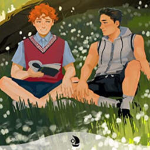
Blurb
-
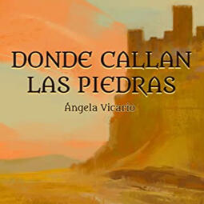
Blurb
-
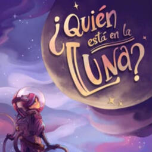
Asesoría
-
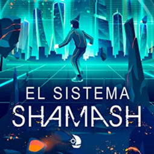
Blurb
-
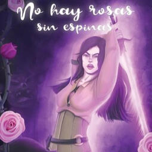
Revisión de galeradas en reimpresión
-
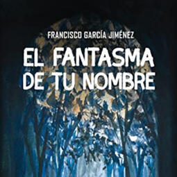
Blurb
-
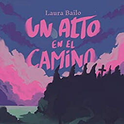
Blurb
-
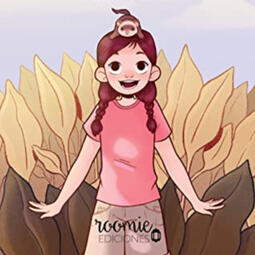
Blurb
-
Selección de relatos y Prólogo
-
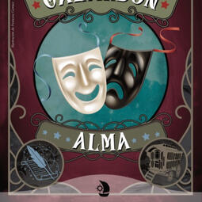
Blurb
-
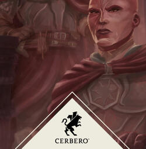
Lectura beta
-
Lectura beta
-
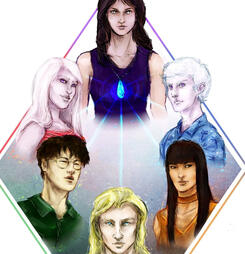
Lectura beta & Lectura cero
-
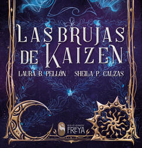
Lectura beta
-
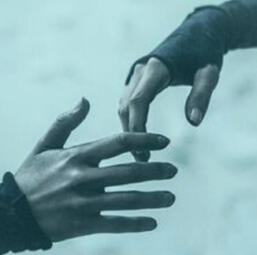
Lectura beta
-
Lectura beta
Difusión literaria
Llevo varios años en el sector editorial y desde entonces he presentado libros en librerías de Madrid y he sido ponente en eventos literarios como la Andalucia Reader Con 2021, el Circo de 3 Cabezas, la FELIOR, el IV Féstival Tártarus... También escribo reseñas y artículos para medios literarios especializados y he sido jurado en premios y seleccionador en antologías, además de realizar otros trabajos editoriales.
Administro el blog literario Flights of a dreamer desde 2016. Desde entonces he publicado cientos de reseñas de novelas y antologías adultas y juveniles de fantasía, ciencia ficción, terror. Se ha llevado reconocimientos como los Premios de la Blogger Lit Con 2017.Si quieres que reseñe tu obra, contáctame aquí
Soy uno de los redactores de La Nave Invisible, medio especializado en la difusión de escritoras y escritores no binaries de fantasía, ciencia ficción y terror sin ánimo de lucro. De su equipo han salido iniciativas como #LeoAutorasOct, #AdoptaUnaAutora... y en 2021 publicamos Cinco años de travesía, un libro con nuestros mejores artículos y textos inéditos, el cual fue ganador del Premio Ignotus 2022 a Mejor Libro de Ensayo.La web ha ganado los Premios Ignotus a Mejor Sitio Web desde 2018 hasta 2022 consecutivamente, además de ser finalista en los European Science Fiction Awards. Puedes leer algunas de mis entradas aquí.
Soy redactor de la revista bimestral La Avenida de los Libros. He escrito artículos, reseñas, entrevistas y crónicas. También organizamos eventos propios y entrevistamos a autores nacionales e internacionales. Además, realizamos los Premios Avenida cada año, premio popular dedicado a visibilizar la obra de autores, ilustradores, traductores y editoriales.
Estuve en el equipo de SuperSonic desde 2017 hasta 2020. Es una revista de literatura de género publicada en Palabaristas Press con relatos patrios e internacionales, entrevistas y artículos. Ha ganado varios Premios Ignotus por Mejor Revista y tiene varios artículos premiados, además de los European Science Fiction Awards.
EVENTOS
Aquí puedes encontrar los eventos próximos en los que participaré, además de los últimos en los que he estado. Si quieres que presente tu libro o participe en un evento, contáctame aquí.
EVENTOS PRÓXIMOS:Por anunciarEVENTOS ANTERIORES DESTACADOS:
-
FELIOR. Feria literaria LGTB+
-
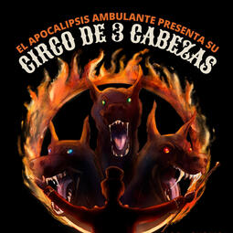
Circo De 3 Cabezas
-
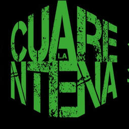
La Cuarentena
-
HispaCón 2021
-
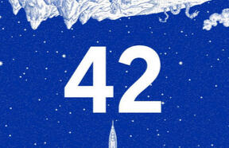
Festival 42
-
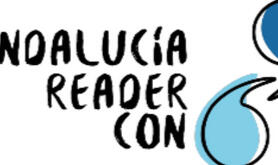
Andalucía Reader Con 2021
-
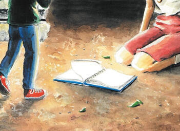
FLM21
-

IV Festival Tártarus
-
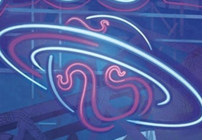
Celsius 232 (2020)

sobre mí
Si quieres que reseñe tu obra, contáctame aquí. Si quieres hacerme cualquier otro tipo de propuesta literaria o una entrevista, contáctame aquí

Arturo Urbanos (Madrid, 1997) escribe varios géneros, pero siempre con representación LGTB+. Entre su ficción corta publicada en revistas y antologías destaca Oro y cenizas, relato finalista en Tras las huellas del dragón (Imágica Ediciones). Después ha publicado la novela Amor improbable en Selecta, sello de romántica de Penguin Random House y ha participado en varios libros de ensayo como La Nave Invisible: Cinco años de travesía, ganador de los Premios Ignotus 2022.Cuando no está programando, trabaja con editoriales y autores y ha sido presentador y ponente en numerosos eventos porque no conoce el tiempo libre. Ha escrito para medios especializados como La Nave Invisible y SuperSonic Magazine, galardonados con los Premios Ignotus y European Science Fiction Awards, y es administrador de Flights of a dreamer, ganador de los premios Blogger Lit Con 2017.
ALGUNAS OPINIONES SOBRE MI TRABAJO
«Tu lectura de sensibilidad de Prime Time fue maravillosa». Raul Caronte, autor de Prime Time (Ediciones Hati) y La memoria de las nubes (Siren Books).Literatura de género y revistas, en el podcast Droids & Druids.«Amor improbable es una preciosa historia que a mí me llegó al corazón». Natalia Sánchez Diana, autora de La heredera kitsune (Imnsonia Ediciones) y más.Entrevista en la revista La Avenida de los Libros, nº52Literatura LGBT+: géneros, etiquetas y la (todavía) necesidad de visibilización. Reportaje«Solo puedo dar las gracias por ese inicio tan bonito que nos da Arturo y por su implicación en general con los relatos y con la antología». Natalia Belchi, autora de la saga Witchypop (Siren Books) y Érase otra vez.Retellings: el valor de volver a contar una historia, en La Nave Invisible«Uno de mis artículos favoritos de este número de la revista SuperSonic ha sido el de Arturo Urbanos». Carla Plumed, de Café Librería.
Bibliografía
Aquí encontrarás ordenados por año mis novelas, relatos, ensayo y artículos destacados.
2022
«Autoras descatalogadas en tu zona», en La Nave Invisible (diciembre de 2022)«Hild y la historia queer de Nicola Griffith», en Flights of a dreamer (diciembre de 2022)«Saga Crave: vampiros, gorgonas, gárgolas y mucho salseo». Escrito con Loreto ML en La Nave Invisible (octubre de 2022)«Dos bandos. Del lado de la Rebelión y Diana en el laberinto», en La Avenida de los Libros nº56«12 libros de ciencia ficción para leer antes de que el mundo se acabe», en La Nave Invisible (septiembre de 2022)«8 autoras para O Día das Letras Galegas», en La Nave Invisible (mayo de 2022)
2021
Cinco años de travesía (La Nave Invisible). Ganador de los Premios Ignotus 2022 a Mejor Libro de Ensayo.«La maldición de Hill House y la serie de Mike Flanagan», en La Avenida de los Libros, nº52Mundos sempiternos: Introducción, arte y conciencia de los géneros literarios (Ediciones Hati)Amor improbable (Selecta, Penguin Random House)«La esperanza es necesaria». Incluido en Antología Esperanza (Antología autoeditada)
2020
«La llegada de la Élite». Historia de Arturo Urbanos y Producción de El Desván de Bastian«10 libros con representación LGTB+ de editoriales independientes», en Flights of a dreamer (junio de 2020)«Oro y cenizas». Incluido en Tras las huellas del dragón (Imágica Ediciones)«Diez recomendaciones para un Día del Libro digital», en Flights of a dreamer (abril de 2020)«Fiction Express: La iniciativa de Boolino para fomentar la lectura», en La Avenida de los Libros (abril de 2020)«La importancia de hacer retos literarios: 40 obras diversas», en Flights of a dreamer (enero de 2020)
2019
«Un repaso por la LIJ de género de 2019». Supersonic #15 (Palabaristas Press)«#LeeOrgullo, una iniciativa para visibilizar al colectivo LGTB+», en Flights of a dreamer (junio de 2019)«Otra forma de actualizar los clásicos». Incluido en Érase otra vez (Antología autoeditada)«Un repaso por la LIJ de género de 2018 II». Supersonic #13 (Palabaristas Press)«Por un mundo mejor». Editorial Cerbero«La llegada de la Élite». Incluido en Cuentos bajo el árbol (Ediciones Hati)
2018
«Sobre lo fantástico y otros cuentos». Incluidos en Literatuits (Antología autoeditada)«Carta a mi yo del pasado». Incluido en De-Tinta Social: Salud Mental (La Nave Sonda)«Un repaso por la LIJ de género de 2018 I». Supersonic #12 (Palabaristas Press)«Caza al cazador». Mención de Honor del I Certamen Viejo y Lejano Oeste«Futuro». Incluido en La sirena varada nº6 (Editorial Dreamers)«Un repaso por la LIJ de género de 2017». Supersonic #10 (Palabaristas Press)«Almas separadas». Incluido en Soles de medianoche (Asociación LGBT Queer Me Dices)«Isla Dragón». Incluido en Antología Fieles (Proyecto Cañada)«El bingo de rechazos, o cómo acabar cosas mejora tu escritura», en Flights of a dreamer (febrero de 2018)«El gran día». Incluido en Fraccionada (Antología autoeditada)«Futuro». Incluido en Antología de invierno sobrenatural (La Cabina de Nemo)
2017
«La princesa». Incluido en Literatura de 140 caracteres (Editorial Cazador de Ratas)«NaNoWriMo, o cómo escribir una novela en un mes», en Flights of a dreamer (octubre de 2017)«Héroes». Incluido en Héroes (Antología autoeditada)«Un año leyendo autoras», en Flights of a dreamer (septiembre de 2017)«Feminismo en la literatura II: Poesía feminista», en Flights of a dreamer (mayo de 2017)«En el Día del Libro yo compro autoras», en Flights of a dreamer (abril de 2017)«Feminismo en la literatura I: Recomendación de libros feministas», en Flights of a dreamer (diciembre de 2016)